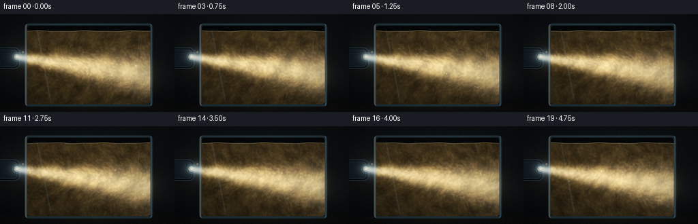
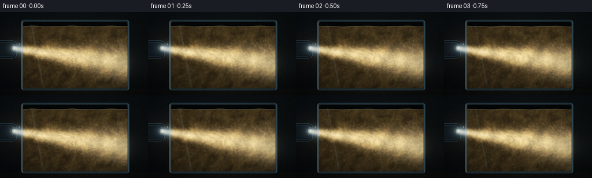
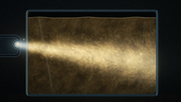

CODING AGENTS AS PIXEL WORLD MODELS
traex/DeepSeek-V4.1-Flash · phygen_049
点击播放 · 原生 RGB 像素
逐轮保存的候选
回放视频、检查图与代码变化。
每份候选均可单独播放。实际图片检查记录在下方工具轨迹中。
候选 01播放与检查图
点击播放 · 原生 RGB 像素

展开代码变化
--- 上一保存版本
+++ 本次保存版本
@@ -0,0 +1,379 @@
+"""Procedural RGB renderer for a phone flashlight passing through muddy water."""
+
+from pathlib import Path
+
+import numpy as np
+from PIL import Image, ImageDraw, ImageFilter
+from scipy.ndimage import gaussian_filter, map_coordinates
+
+import artifact_io
+
+
+W, H, N, FPS = 256, 144, 20, 4.0
+SS = 2
+RW, RH = W * SS, H * SS
+OUT = Path(__file__).resolve().parent
+
+JX0, JY0, JX1, JY1 = 36.0, 13.0, 224.0, 136.0
+WX0, WY0, WX1, WY1 = 40.0, 25.0, 220.0, 133.0
+
+
+def rounded_mask(x0, y0, x1, y1, radius, size=(RW, RH)):
+ mask = Image.new("L", size, 0)
+ draw = ImageDraw.Draw(mask)
+ draw.rounded_rectangle(
+ (round(x0 * SS), round(y0 * SS), round(x1 * SS), round(y1 * SS)),
+ radius=round(radius * SS),
+ fill=255,
+ )
+ return np.asarray(mask, dtype=np.float32) / 255.0
+
+
+def sample_field(field, x, y):
+ """Bilinear sample of a periodic scalar field using render-pixel coordinates."""
+ h, w = field.shape
+ sx = x * (w / RW)
+ sy = y * (h / RH)
+ return map_coordinates(field, [sy, sx], order=1, mode="wrap").astype(np.float32)
+
+
+def gauss(x, y, cx, cy, sx, sy=None):
+ sy = sx if sy is None else sy
+ return np.exp(-0.5 * (((x - cx) / sx) ** 2 + ((y - cy) / sy) ** 2))
+
+
+def smoothstep(edge0, edge1, value):
+ t = np.clip((value - edge0) / (edge1 - edge0), 0.0, 1.0)
+ return t * t * (3.0 - 2.0 * t)
+
+
+def flow_uv(u, v, t):
+ """A compact stirred-vessel velocity field in normalized water coordinates."""
+ vx = 0.0065 * np.sin(2 * np.pi * (1.28 * v + 0.18 * t))
+ vy = 0.0055 * np.cos(2 * np.pi * (1.16 * u - 0.14 * t))
+ vx += 0.0050 * np.cos(2 * np.pi * (1.83 * u + 1.10 * v - 0.09 * t))
+ vy += 0.0045 * np.sin(2 * np.pi * (1.36 * u - 1.72 * v + 0.11 * t))
+
+ vortices = (
+ (0.34 + 0.022 * np.sin(0.73 * t), 0.40 + 0.020 * np.cos(0.61 * t), 0.038, 0.20),
+ (0.67 + 0.018 * np.cos(0.66 * t), 0.64 + 0.024 * np.sin(0.58 * t), -0.032, 0.17),
+ (0.52 + 0.016 * np.sin(0.51 * t), 0.20 + 0.012 * np.cos(0.77 * t), 0.017, 0.12),
+ )
+ for cx, cy, strength, radius in vortices:
+ dx = u - cx
+ dy = v - cy
+ r2 = dx * dx + dy * dy
+ falloff = np.exp(-r2 / (2.0 * radius * radius))
+ vx += -dy * strength * falloff / (radius + np.sqrt(r2))
+ vy += dx * strength * falloff / (radius + np.sqrt(r2))
+
+ edge = np.minimum(np.minimum(u, 1.0 - u), np.minimum(v, 1.0 - v))
+ inward = smoothstep(0.0, 0.09, edge)
+ vx *= 0.25 + 0.75 * inward
+ vy *= 0.25 + 0.75 * inward
+ vx += 0.0015 * (0.5 - u) * (1.0 - inward)
+ vy += 0.0015 * (0.5 - v) * (1.0 - inward)
+ return vx, vy
+
+
+def make_noise_fields(rng):
+ return {
+ "coarse": rng.random((20, 36), dtype=np.float32),
+ "mid": rng.random((42, 75), dtype=np.float32),
+ "fine": rng.random((88, 156), dtype=np.float32),
+ "streak": rng.random((30, 128), dtype=np.float32),
+ }
+
+
+def simulate_particles(rng, count=3200):
+ u = rng.uniform(0.02, 0.98, count).astype(np.float32)
+ v = rng.uniform(0.03, 0.97, count).astype(np.float32)
+ size = rng.uniform(0.35, 1.35, count).astype(np.float32)
+ phase = rng.uniform(0.0, 2 * np.pi, count).astype(np.float32)
+ warm = rng.uniform(0.15, 1.0, count).astype(np.float32)
+ histories = []
+ for frame in range(N):
+ t = frame / FPS
+ for _ in range(7):
+ vx, vy = flow_uv(u, v, t)
+ u = np.clip(u + vx / 7.0, 0.005, 0.995)
+ v = np.clip(v + vy / 7.0, 0.008, 0.992)
+ histories.append((u.copy(), v.copy(), size.copy(), phase.copy(), warm.copy()))
+ return histories
+
+
+def render_particles(history, beam_s, beam_perp, water_mask):
+ u, v, size, phase, warm = history
+ px = (WX0 + u * (WX1 - WX0)) * SS
+ py = (WY0 + v * (WY1 - WY0)) * SS
+ ix = np.floor(px).astype(np.int32)
+ iy = np.floor(py).astype(np.int32)
+ fx = px - ix
+ fy = py - iy
+
+ beam_s_at_particle = map_coordinates(beam_s, [py, px], order=1, mode="nearest")
+ beam_perp_at_particle = map_coordinates(beam_perp, [py, px], order=1, mode="nearest")
+ beam_width = 3.0 + np.maximum(beam_s_at_particle, 0.0) * 0.068
+ illumination = np.exp(-0.5 * (beam_perp_at_particle / (beam_width + 1e-6)) ** 2)
+ illumination *= np.exp(-np.maximum(beam_s_at_particle, 0.0) / 245.0)
+ illumination = np.clip(0.07 + 2.8 * illumination, 0.0, 3.0)
+ weight = (0.22 + 0.78 * warm) * (0.55 + 0.65 * size) * illumination
+
+ density = np.zeros((RH, RW), dtype=np.float32)
+ glow = np.zeros((RH, RW, 3), dtype=np.float32)
+ colors = np.stack(
+ (
+ 1.00 + 0.04 * np.sin(phase),
+ 0.69 + 0.12 * warm,
+ 0.34 + 0.10 * warm,
+ ),
+ axis=1,
+ )
+ for ox, oy, frac in (
+ (0, 0, (1 - fx) * (1 - fy)),
+ (1, 0, fx * (1 - fy)),
+ (0, 1, (1 - fx) * fy),
+ (1, 1, fx * fy),
+ ):
+ xx = np.clip(ix + ox, 0, RW - 1)
+ yy = np.clip(iy + oy, 0, RH - 1)
+ flat = yy * RW + xx
+ ww = weight * frac
+ density += np.bincount(flat, weights=ww, minlength=RW * RH).reshape(RH, RW)
+ for c in range(3):
+ glow[:, :, c] += np.bincount(
+ flat, weights=ww * colors[:, c], minlength=RW * RH
+ ).reshape(RH, RW)
+
+ density = gaussian_filter(density, 0.48 * SS) * water_mask
+ for c in range(3):
+ glow[:, :, c] = gaussian_filter(glow[:, :, c], 0.55 * SS) * water_mask
+ return density, glow
+
+
+def render_frame(frame, noises, history, rng):
+ t = frame / FPS
+ yy, xx = np.mgrid[0:RH, 0:RW].astype(np.float32)
+ x = (xx + 0.5) / SS
+ y = (yy + 0.5) / SS
+
+ outer = rounded_mask(JX0, JY0, JX1, JY1, 7.0)
+ inner = rounded_mask(JX0 + 4.0, JY0 + 4.0, JX1 - 4.0, JY1 - 4.0, 4.0)
+
+ surface = 24.8 + 0.55 * np.sin(0.088 * x + 1.55 * t) + 0.26 * np.sin(0.19 * x - 2.1 * t)
+ water = inner * smoothstep(surface - 0.42, surface + 0.42, y)
+ air = np.clip(inner - water, 0.0, 1.0)
+
+ # Dark room with a cool side and a warm spill from the flashlight.
+ base = np.zeros((RH, RW, 3), dtype=np.float32)
+ yn = y / H
+ xn = x / W
+ base[:, :, 0] = 0.010 + 0.014 * (1.0 - yn) + 0.006 * xn
+ base[:, :, 1] = 0.018 + 0.021 * (1.0 - yn) + 0.005 * xn
+ base[:, :, 2] = 0.024 + 0.026 * (1.0 - yn) + 0.005 * (1.0 - xn)
+ base += gauss(x, y, 34, 65, 34, 25)[..., None] * np.array([0.050, 0.035, 0.017], np.float32)
+ base += gauss(x, y, 128, 68, 86, 60)[..., None] * np.array([0.020, 0.013, 0.006], np.float32)
+
+ table_y = 132.5
+ table = smoothstep(table_y - 1.0, table_y + 1.5, y)
+ table_texture = 0.5 + 0.5 * sample_field(noises["fine"], x * 1.8, y * 7.0)
+ base *= (1.0 - 0.35 * table)[..., None]
+ base += table[..., None] * table_texture[..., None] * np.array([0.017, 0.014, 0.011], np.float32)
+ reflection = gauss(x, y, 128, 136, 78, 8) * table
+ base += reflection[..., None] * np.array([0.025, 0.017, 0.007], np.float32)
+
+ # Warped sediment density: slow vortices plus fine suspended silt.
+ u = np.clip((x - WX0) / (WX1 - WX0), 0.0, 1.0)
+ v = np.clip((y - WY0) / (WY1 - WY0), 0.0, 1.0)
+ c1x = 0.34 + 0.030 * np.sin(0.72 * t)
+ c1y = 0.39 + 0.022 * np.cos(0.58 * t)
+ dx1, dy1 = u - c1x, v - c1y
+ r1 = np.sqrt(dx1 * dx1 + dy1 * dy1) + 0.04
+ c2x = 0.69 + 0.020 * np.cos(0.64 * t)
+ c2y = 0.66 + 0.025 * np.sin(0.53 * t)
+ dx2, dy2 = u - c2x, v - c2y
+ r2 = np.sqrt(dx2 * dx2 + dy2 * dy2) + 0.05
+
+ wx = u.copy()
+ wy = v.copy()
+ wx += 0.038 * np.sin(2 * np.pi * (1.10 * v + 0.10 * t))
+ wy += 0.026 * np.sin(2 * np.pi * (1.45 * u - 0.12 * t))
+ wx += -dy1 / r1 * 0.095 * np.exp(-r1 / 0.20)
+ wy += dx1 / r1 * 0.075 * np.exp(-r1 / 0.22)
+ wx += dy2 / r2 * 0.070 * np.exp(-r2 / 0.17)
+ wy += -dx2 / r2 * 0.060 * np.exp(-r2 / 0.19)
+
+ warp_x = (WX0 + wx * (WX1 - WX0)) * SS
+ warp_y = (WY0 + wy * (WY1 - WY0)) * SS
+ n_coarse = sample_field(noises["coarse"], warp_x * 0.82 + 17 * t, warp_y * 0.82)
+ n_mid = sample_field(noises["mid"], warp_x * 1.35 - 12 * t, warp_y * 1.35 + 5 * t)
+ n_fine = sample_field(noises["fine"], warp_x * 2.55 + 22 * t, warp_y * 2.55 - 8 * t)
+ n_streak = sample_field(noises["streak"], warp_x * 1.7 + 8 * t, warp_y * 0.55)
+ cloud = 0.47 * n_coarse + 0.31 * n_mid + 0.14 * n_fine + 0.08 * n_streak
+ cloud = np.clip((cloud - 0.24) * 1.62, 0.0, 1.0)
+ tendril = np.exp(-((n_mid - 0.54) / 0.075) ** 2) * 0.55
+ tendril += np.exp(-((n_streak - 0.51) / 0.045) ** 2) * 0.34
+ tendril *= smoothstep(0.02, 0.15, v)
+
+ # The beam, represented as a softly widening, turbulent volume.
+ start = np.array([27.0, 63.5], dtype=np.float32)
+ direction = np.array([0.9915, 0.1305], dtype=np.float32)
+ direction /= np.linalg.norm(direction)
+ normal = np.array([-direction[1], direction[0]], dtype=np.float32)
+ rel_x = x - start[0]
+ rel_y = y - start[1]
+ beam_s = rel_x * direction[0] + rel_y * direction[1]
+ beam_perp = rel_x * normal[0] + rel_y * normal[1]
+ beam_width = 2.2 + np.maximum(beam_s, 0.0) * 0.072
+ beam_inside = smoothstep(-4.0, 3.0, beam_s)
+ beam_core = np.exp(-0.5 * (beam_perp / beam_width) ** 2)
+ beam_halo = np.exp(-0.5 * (beam_perp / (beam_width * 2.7)) ** 2)
+ turbulence = 0.72 + 0.56 * n_mid + 0.22 * np.sin(0.16 * x + 0.11 * y + 2.8 * t)
+ beam_falloff = np.exp(-np.maximum(beam_s, 0.0) / 215.0)
+ beam_shaft = beam_inside * beam_falloff * (1.75 * beam_core + 0.26 * beam_halo)
+ beam_shaft *= np.clip(turbulence, 0.32, 1.35)
+ beam_shaft *= smoothstep(-8.0, 4.0, beam_s)
+
+ # Fluid volume. Dense mud is darker while fine silt scatters the warm beam.
+ fluid = np.zeros_like(base)
+ depth_light = 0.72 + 0.28 * (1.0 - v)
+ fluid[:, :, 0] = (0.165 + 0.185 * cloud - 0.055 * tendril) * depth_light
+ fluid[:, :, 1] = (0.108 + 0.120 * cloud - 0.034 * tendril) * depth_light
+ fluid[:, :, 2] = (0.052 + 0.055 * cloud - 0.017 * tendril) * depth_light
+ fluid *= water[..., None]
+
+ beam_water = beam_shaft * (0.45 + 0.95 * cloud) * water
+ fluid += beam_water[..., None] * np.array([0.68, 0.47, 0.235], np.float32)
+ fluid += (beam_core * beam_inside * water)[..., None] * np.array([0.52, 0.49, 0.42], np.float32)
+
+ # Interfering, refracted filaments make moving caustic lace inside the mud.
+ phase_a = 10.0 * u + 4.4 * v + 2.1 * n_coarse + 0.8 * np.sin(4.6 * v + 1.2 * t)
+ phase_b = 5.1 * u - 7.8 * v + 2.7 * n_mid + 0.65 * np.sin(5.2 * u - 1.5 * t)
+ caustic_a = np.exp(-(np.sin(phase_a + 1.8 * t) / 0.21) ** 2)
+ caustic_b = np.exp(-(np.sin(phase_b - 1.4 * t) / 0.16) ** 2)
+ caustic = 0.52 * caustic_a + 0.42 * caustic_b
+ caustic *= (0.20 + 0.80 * beam_core) * beam_falloff * water
+ caustic *= 0.40 + 0.60 * smoothstep(0.12, 0.72, u)
+ fluid += caustic[..., None] * np.array([0.50, 0.39, 0.21], np.float32)
+
+ density, particle_glow = render_particles(history, beam_s, beam_perp, water)
+ fluid *= (1.0 - 0.34 * np.clip(density, 0.0, 1.3))[..., None]
+ fluid += particle_glow * 0.45
+
+ # A thin meniscus and the dim air gap above the water.
+ meniscus = np.exp(-((y - surface) / 0.52) ** 2) * inner
+ fluid += meniscus[..., None] * np.array([0.30, 0.25, 0.16], np.float32)
+ fluid += air[..., None] * np.array([0.008, 0.012, 0.015], np.float32)
+
+ image = base * (1.0 - outer[..., None]) + fluid
+
+ # Glass body: cool edges, a warm entry edge, and broad reflected window light.
+ rim = np.clip(outer - inner, 0.0, 1.0)
+ edge_left = np.exp(-((x - (JX0 + 2.0)) / 1.35) ** 2) * outer
+ edge_right = np.exp(-((x - (JX1 - 2.0)) / 1.20) ** 2) * outer
+ edge_top = np.exp(-((y - (JY0 + 2.0)) / 1.15) ** 2) * outer
+ edge_bottom = np.exp(-((y - (JY1 - 2.0)) / 1.35) ** 2) * outer
+ glass = rim[..., None] * np.array([0.070, 0.098, 0.112], np.float32)
+ glass += (0.55 * edge_left + 0.74 * edge_right + 0.38 * edge_top + 0.28 * edge_bottom)[..., None] * np.array(
+ [0.20, 0.31, 0.37], np.float32
+ )
+ glass += (0.85 * edge_left)[..., None] * np.array([0.25, 0.16, 0.075], np.float32)
+ reflection_band = np.exp(-((x - 54.0 - 0.19 * (y - 20.0)) / 1.1) ** 2)
+ reflection_band *= outer * smoothstep(18.0, 30.0, y) * (1.0 - smoothstep(122.0, 134.0, y))
+ glass += reflection_band[..., None] * np.array([0.050, 0.075, 0.085], np.float32)
+ reflection_band2 = np.exp(-((x - 205.0 + 0.08 * (y - 25.0)) / 0.65) ** 2)
+ reflection_band2 *= outer * smoothstep(30.0, 40.0, y) * (1.0 - smoothstep(112.0, 126.0, y))
+ glass += reflection_band2[..., None] * np.array([0.045, 0.066, 0.074], np.float32)
+ image = image * (1.0 - 0.60 * rim[..., None]) + glass
+
+ # The phone body and its flashlight head sit just outside the left glass edge.
+ phone = Image.new("RGBA", (RW, RH), (0, 0, 0, 0))
+ pd = ImageDraw.Draw(phone)
+ pd.rounded_rectangle(
+ (-30 * SS, 49 * SS, 29 * SS, 80 * SS),
+ radius=8 * SS,
+ fill=(9, 13, 17, 255),
+ outline=(38, 51, 60, 255),
+ width=max(1, SS),
+ )
+ pd.rounded_rectangle(
+ (-24 * SS, 52 * SS, 25 * SS, 77 * SS),
+ radius=5 * SS,
+ fill=(15, 22, 27, 255),
+ outline=(29, 40, 47, 255),
+ width=max(1, SS),
+ )
+ pd.ellipse((18 * SS, 56 * SS, 31 * SS, 69 * SS), fill=(8, 13, 17, 255), outline=(53, 65, 70, 255), width=SS)
+ pd.ellipse((20 * SS, 58 * SS, 29 * SS, 67 * SS), fill=(124, 162, 174, 255))
+ pd.ellipse((22 * SS, 60 * SS, 27 * SS, 65 * SS), fill=(245, 250, 239, 255))
+ pd.ellipse((32 * SS, 54 * SS, 35 * SS, 57 * SS), fill=(89, 80, 65, 255))
+ phone_np = np.asarray(phone, dtype=np.float32) / 255.0
+ pa = phone_np[:, :, 3:4]
+ image = image * (1.0 - pa) + phone_np[:, :, :3] * pa
+
+ # Flashlight source, airborne dust, and the initial part of the shaft.
+ lens = gauss(x, y, 25.2, 62.5, 1.15, 1.15)
+ lens_halo = gauss(x, y, 25.5, 62.5, 8.0, 6.2)
+ outside_shaft = beam_inside * (1.0 - water) * np.exp(-np.maximum(beam_s, 0.0) / 55.0)
+ outside_shaft *= 1.7 * beam_core + 0.30 * beam_halo
+ outside_shaft *= smoothstep(-2.0, 2.0, beam_s)
+ image += outside_shaft[..., None] * np.array([0.62, 0.73, 0.80], np.float32)
+ image += (2.5 * lens + 0.22 * lens_halo)[..., None] * np.array([0.88, 0.96, 1.0], np.float32)
+
+ dust_rng = np.random.default_rng(800 + frame)
+ for _ in range(18):
+ ddx = dust_rng.uniform(32.0, 214.0)
+ ddy = dust_rng.uniform(26.0, 128.0)
+ rad = dust_rng.uniform(0.25, 0.72)
+ dust = gauss(x, y, ddx, ddy, rad)
+ dust_beam = np.exp(-0.5 * ((ddy - (63.5 + 0.131 * (ddx - 27.0))) / (2.8 + 0.072 * ddx)) ** 2)
+ image += dust[..., None] * dust_beam * np.array([0.95, 0.86, 0.65], np.float32)
+
+ # Optical bloom, gentle veiling glare, and a cinematic tone curve.
+ bright = np.maximum(image - 0.48, 0.0)
+ bloom = np.empty_like(bright)
+ for c in range(3):
+ bloom[:, :, c] = gaussian_filter(bright[:, :, c], 3.1 * SS)
+ broad = np.empty_like(bright)
+ for c in range(3):
+ broad[:, :, c] = gaussian_filter(bright[:, :, c], 10.0 * SS)
+ image += bloom * 0.52 + broad * 0.22
+ image += gauss(x, y, 128, 70, 98, 58)[..., None] * np.array([0.011, 0.008, 0.004], np.float32)
+
+ exposure = 1.12
+ image = 1.0 - np.exp(-np.maximum(image, 0.0) * exposure)
+ shadow_tint = np.array([0.86, 1.0, 1.05], np.float32)
+ highlight_tint = np.array([1.04, 1.0, 0.93], np.float32)
+ luma = image @ np.array([0.2126, 0.7152, 0.0722], np.float32)
+ tint = shadow_tint * (1.0 - luma[..., None]) + highlight_tint * luma[..., None]
+ image *= tint
+
+ vignette = 1.0 - 0.34 * (((x - W / 2) / (W * 0.67)) ** 2 + ((y - H / 2) / (H * 0.78)) ** 2)
+ image *= np.clip(vignette, 0.58, 1.0)[..., None]
+ image = np.clip(image, 0.0, 1.0) ** (1.0 / 1.04)
+
+ # Fine, deterministic sensor grain breaks up gradients without distracting shimmer.
+ grain = rng.normal(0.0, 0.0085, (RH, RW, 1)).astype(np.float32)
+ image = np.clip(image + grain, 0.0, 1.0)
+ return Image.fromarray(np.round(image * 255.0).astype(np.uint8), "RGB")
+
+
+def main():
+ rng = np.random.default_rng(49023)
+ noises = make_noise_fields(rng)
+ histories = simulate_particles(rng)
+ frames = []
+ for frame in range(N):
+ frame_rng = np.random.default_rng(9011 + frame * 17)
+ large = render_frame(frame, noises, histories[frame], frame_rng)
+ small = large.resize((W, H), Image.Resampling.LANCZOS)
+ small = small.filter(ImageFilter.UnsharpMask(radius=0.55, percent=58, threshold=2))
+ frames.append(np.asarray(small, dtype=np.uint8))
+ print(f"rendered {frame + 1:02d}/{N}")
+
+ artifact_io.save(frames, OUT)
+ print(f"saved {len(frames)} RGB frames to {OUT}")
+
+
+if __name__ == "__main__":
+ main()
候选 02播放与检查图
点击播放 · 原生 RGB 像素


展开代码变化
--- 上一保存版本
+++ 本次保存版本
@@ -337,7 +337,7 @@
broad = np.empty_like(bright)
for c in range(3):
broad[:, :, c] = gaussian_filter(bright[:, :, c], 10.0 * SS)
- image += bloom * 0.52 + broad * 0.22
+ image += bloom * 0.84 + broad * 0.33
image += gauss(x, y, 128, 70, 98, 58)[..., None] * np.array([0.011, 0.008, 0.004], np.float32)
exposure = 1.12
@@ -355,7 +355,7 @@
# Fine, deterministic sensor grain breaks up gradients without distracting shimmer.
grain = rng.normal(0.0, 0.0085, (RH, RW, 1)).astype(np.float32)
image = np.clip(image + grain, 0.0, 1.0)
- return Image.fromarray(np.round(image * 255.0).astype(np.uint8), "RGB")
+ return Image.fromarray(np.round(image * 255.0).astype(np.uint8))
def main():
候选 03播放与检查图
可观测工具轨迹
实际执行的命令与返回图片。
命令 1exit 0
/bin/bash -c "pwd && rg --files -g '"'!*__pycache__*'"' -g '"'!*.pyc'"'"
命令 2exit 0
/bin/bash -c 'cat prompt.txt'
命令 3exit 0
/bin/bash -c 'cat GENERATION_RULES.md'
命令 4exit 0
/bin/bash -c 'cat task_spec.json'
命令 5exit 0
/bin/bash -c "ls -la && find . -maxdepth 2 -type f -printf '%p %s bytes\\n' | sort"
命令 6exit 0
/bin/bash -c "sed -n '1,260p' artifact_io.py"
命令 7exit 0
/bin/bash -c "sed -n '1,260p' player_template.html"
命令 8exit 0
/bin/bash -c "python - <<'PY'
import numpy, PIL
print('numpy', numpy.__version__)
print('PIL', PIL.__version__)
try:
import scipy; print('scipy', scipy.__version__)
except Exception as e: print('no scipy',e)
try:
import cv2; print('cv2', cv2.__version__)
except Exception as e: print('no cv2',e)
try:
import imageio; print('imageio', imageio.__version__)
except Exception as e: print('no imageio',e)
PY"命令 9exit 1
/bin/bash -c 'python generate.py'
命令 10exit 0
/bin/bash -c "rg -n \"\\*=|\\+=|/=|-=.*\\[\\.\\.\\.\" generate.py"
命令 11exit 1
/bin/bash -c 'python generate.py'
命令 12exit 1
/bin/bash -c 'python generate.py'
命令 13exit 0
/bin/bash -c 'python generate.py'
命令 14exit 0
/bin/bash -c "python - <<'PY'
import numpy as np
from PIL import Image
for i in [0,5,10,15,19]:
a=np.asarray(Image.open(f'frames/{i:02d}.png')).astype(float)/255
l=a@np.array([.2126,.7152,.0722])
print(i, 'mean', l.mean(), 'p50',np.percentile(l,50),'p90',np.percentile(l,90),'p99',np.percentile(l,99),'max',l.max())
PY"命令 15exit 0
/bin/bash -c "python - <<'PY'
import numpy as np
from PIL import Image
imgs=[np.asarray(Image.open(f'frames/{i:02d}.png')).astype(np.float32) for i in range(20)]
for gap in [1,2,5,10,19]:
ds=[np.abs(imgs[i+gap]-imgs[i]).mean() for i in range(20-gap)]
print(gap, round(float(np.mean(ds)),3), [round(float(x),2) for x in ds])
PY"命令 16exit 0
/bin/bash -c 'python generate.py'
命令 17exit 0
/bin/bash -c "python - <<'PY'
from pathlib import Path
import numpy as np
from PIL import Image
p=Path('pixels.npz')
z=np.load(p)
print('npz keys:', list(z.keys()))
a=z['pixels']
print('pixels:', a.shape, a.dtype, 'range:', int(a.min()), int(a.max()))
files=sorted(Path('frames').glob('*.png'))
print('frame files:', len(files), files[0].name, files[-1].name)
print('dimensions:', Image.open(files[0]).size, Image.open(files[0]).mode)
print('artifacts:', [(f.name, f.stat().st_size) for f in [Path('index.html'),Path('inspection.png'),Path('transition_check.png'),Path('pixels.npz')]])
PY"命令 18exit 0
/bin/bash -c 'python -m py_compile generate.py && git status --short 2>/dev/null || true'
视觉工具实际返回图片 1

视觉工具实际返回图片 2

视觉工具实际返回图片 3

保存候选 3 份；完成命令 18 次；可验证图片返回 3 张。原始 API 响应与完整日志保留在本地。